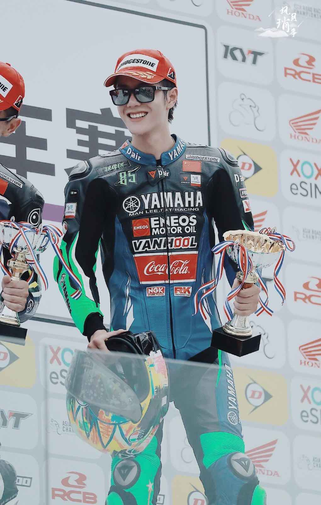

Wang Yibo

Wang Yibo
As an actor, Wang Yibo is best known for his roles in television series Love Actually (2017), Gank Your Heart (2019), The Untamed(2019),Legend of Fei (2020),and Faith Makes Great (2021). He also entered the Forbes_China_Celebrity_100 list in the next two years, ranking #9 in 2020 and #2 in 2021
He then debuted in a group called'UNIQ'along with other 4 members and he was the youngest.In 2018, he started solo activity and release hit songs named "Fire", "Lucky", "My rules" and so on. He also sang lots of ost in his series. Among of those songs, the most famous one is the one he sang with Xiao Zhan. The song name is "Wuji".
Great songs of Wang Yibo
Wang Yibo - Lucky Wang Yibo - Fire Wang Yibo - The Rules of My World Wang Yibo - Youth Comes In Time Wang Yibo - Xiwei (Legend of Fei ost) Wang Yibo - Buwang (The Untamed ost) Wang Yibo - Wuji (The Untamed ost with Xiao Zhan) In August of 2019, Wang Yibo, who rides with Yamaha China Racing Team, participated in the Asia Road Racing Championship (ARRC) and won. The truth is his first race held in the same year in a month of May, he withdraw because of mechanical problems. “I feel that the motion from motorbikes are more enthralling than race cars, and thus I went down the tracks of motorcycling,” he once said.
Wang Yibo was only 17 in age when he debuted in 'UNIQ', he was so in love with dancing and in love with it. He really loves to try all kind of dances such as hiphop,krump,B-boy and so on. In one survival program, he once mentioned that younger self of him had to face with myocarditis (inflammation of the heart) and that he had to stop dancing. But still now, he did not give up even he got into hospitals once a while, he keeps on going for what he loves.

Wang has used his image to raise awareness for multiple causes, such as Firefighting Public Welfare of Luoyang City, SOS Children's Villages' campaign with Qingsongchou "No Child Alone: I want to have a family", the Civil Traffic of Hunan Province, and "Earth Aid, Green Life on the Table", a campaign co-sponsored by WildAid, China Green Carbon Foundation, and Food and Agriculture Organization. He was one of the celebrity readers of "Model Reading", the first youth reading and sharing program jointly created by Kuwo Music and China Youth Daily. It aims to evoke interest and enthusiasm of the youth to start reading literary works.Wang has been active to show his support in fighting the COVID-19 pandemic.
Phone:09123456568
Facebook Github©2021 Aurora